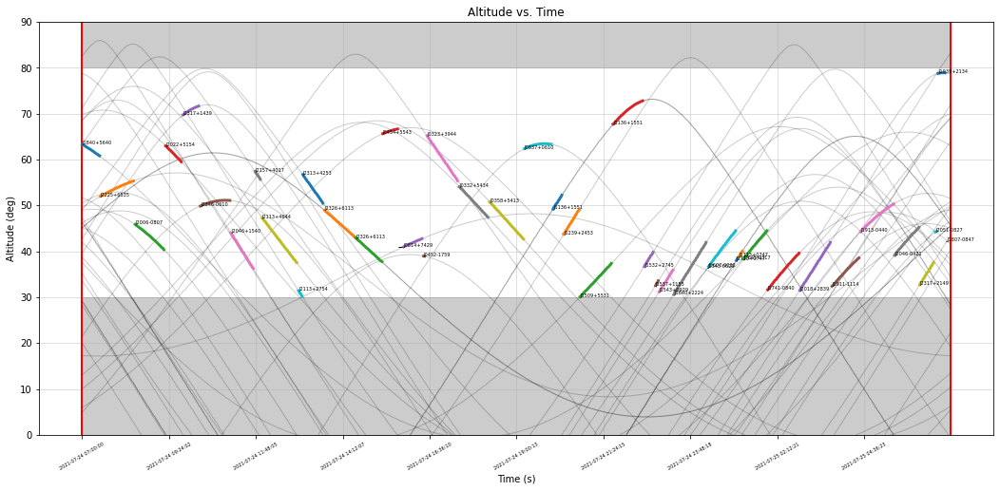

Introduction to AstroScheduller
# Example: Introduction to AstroScheduller
# https://github.com/xiawenke/AstroScheduller/blob/Dev/examples/intro_to_ash.py
import astroscheduller as ash # Import AstroScheduller
# Prepare for an example
ash.example("https://raw.githubusercontent.com/AstroScheduller/AstroScheduller/Dev/tests/psr_list_debug.xml")
obsPlan = ash.scheduller() # Create a new scheduller object
obsPlan.objects.from_xml("./example.xml") # Load the objects from a XML file
obsPlan.get_schedule() # Generate the schedule
obsPlan.stats() # Calculate the statistics
obsPlan.plot().show() # Plot the schedule
obsPlan.schedule.to_table("./example.txt") # Export the schedule to a table
========== STATS ==========
| All Objects: 85
| Scheduled Objects: 42
| Unscheduled Objects: 43
| Observation Duration: 83230
| Wait Duration: 2820
| Schedule Rate: 49.41%
===========================

Download/Open this example as: